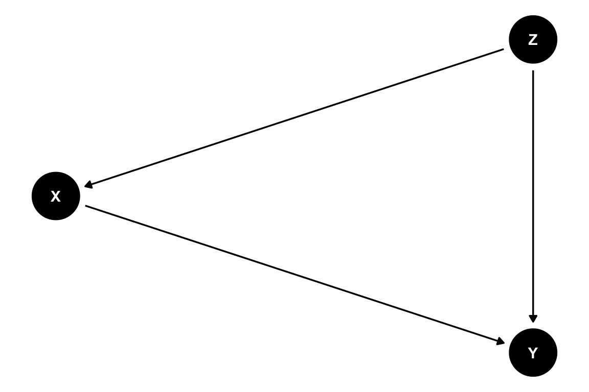
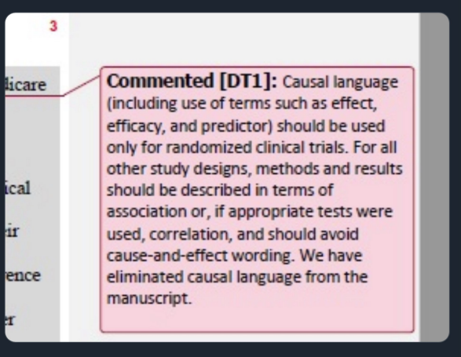
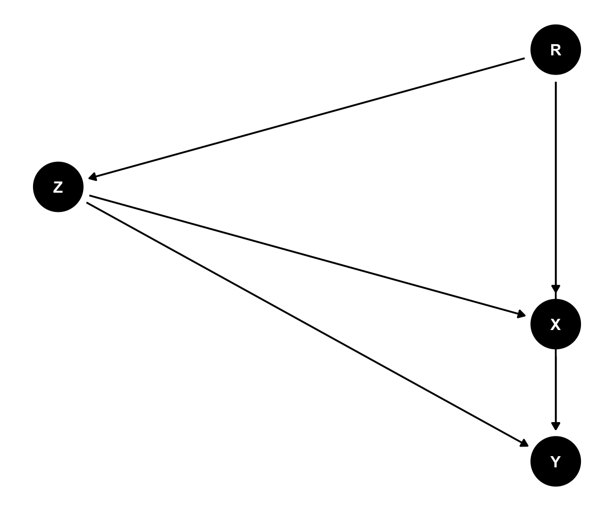
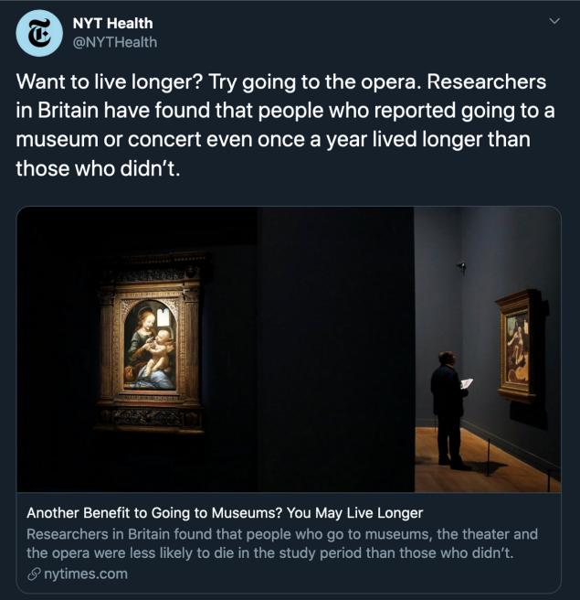
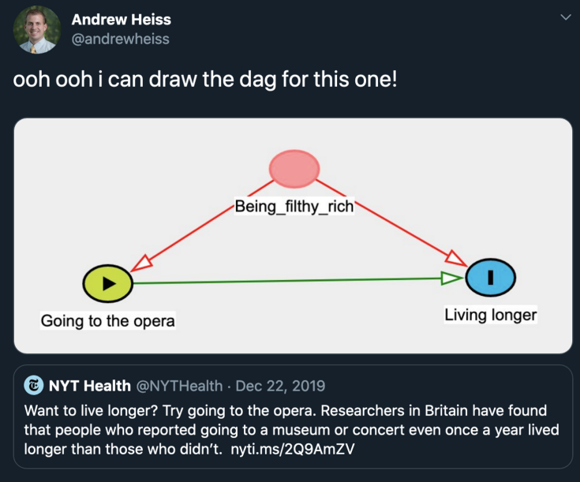
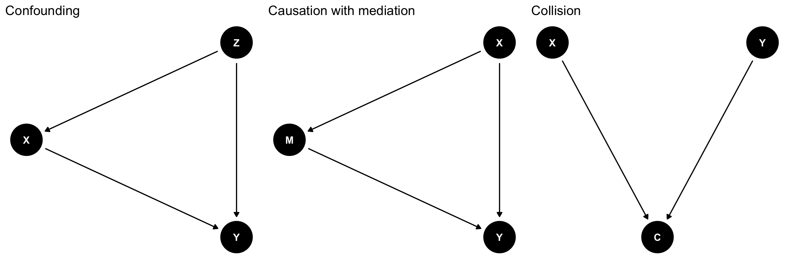
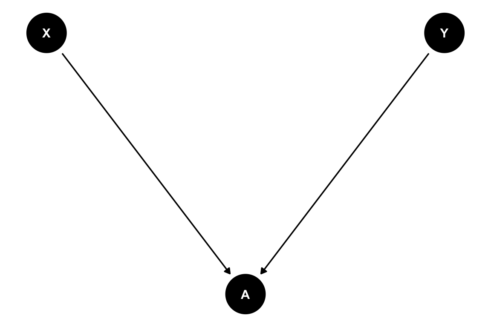
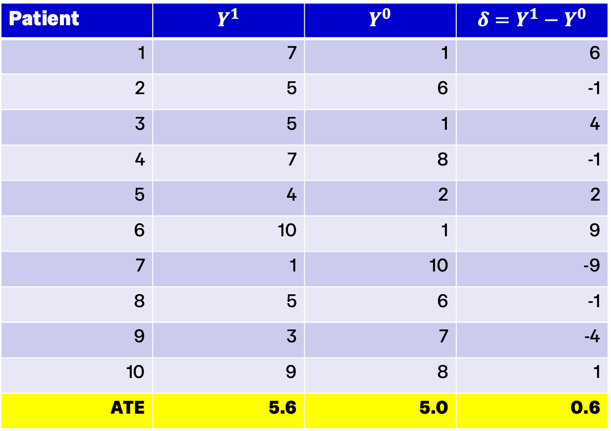
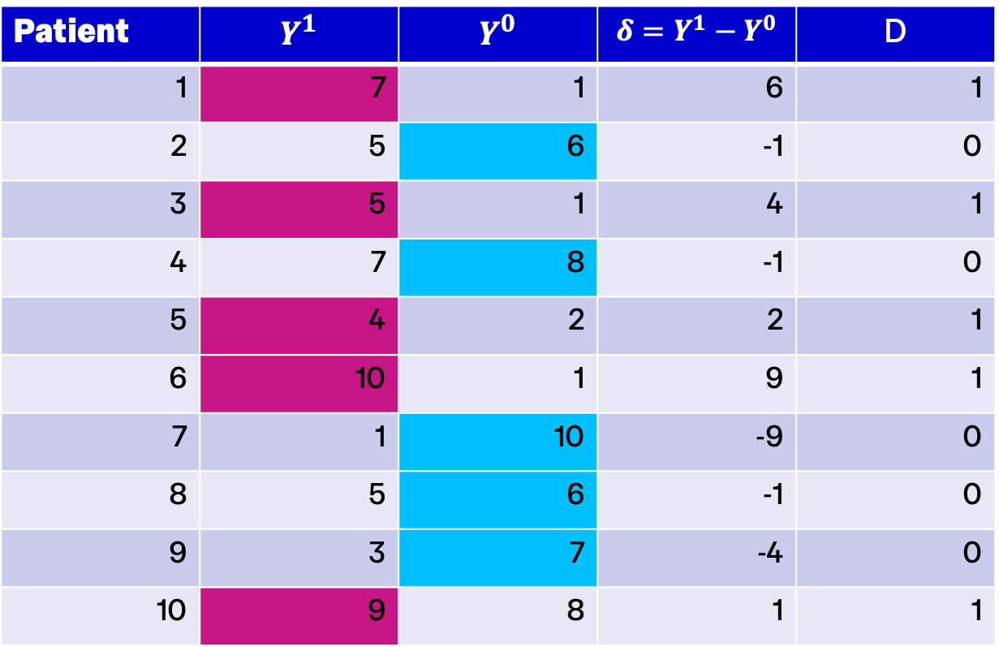
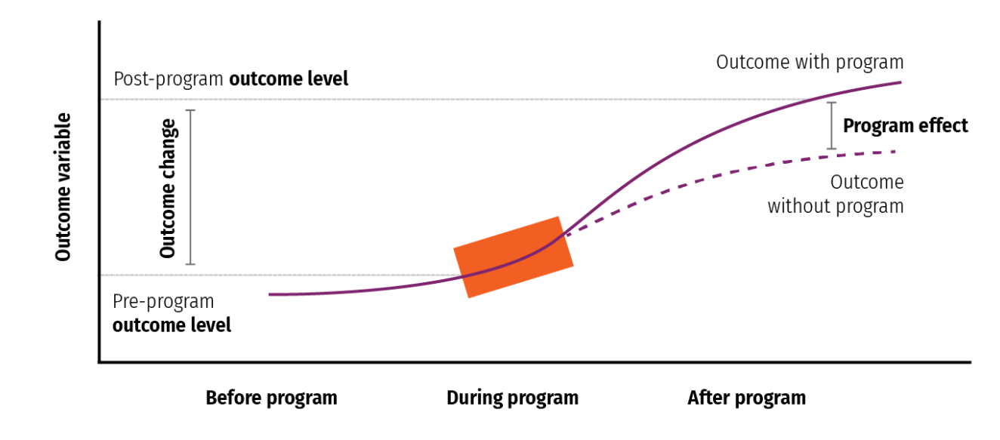

Introduction to Health Analytics
Causal Inference
Course road map
| Lecture | Topic |
|---|---|
| 1 | Introduction to health data & R |
| 2 | Data visualization |
| 3 | Data wrangling & exploratory data analysis |
| 4 | Causal inference |
| 5 | Linear regression |
| 6 | Linear regression: uncertainty & hypothesis testing |
| 7 | Panel data: difference-in-differences & fixed effects |
| 8 | Limited dependent variables: LPM, logit, probit |
| 9 | Introduction to machine learning for health analytics |
| 10 | Course review |
The health analytics pipeline

Today
- Types of question: measurement, prediction, causal
- Association vs causality
- Randomised controlled trials (RCTs)
- Causal inference with observational data
- Two frameworks for reasoning about causality:
- Directed Acyclical Graphs (DAGs)
- Potential outcomes
- Selection bias and average treatment effects
Types of question
What are we trying to do with data?
- Before choosing methods we must be clear about the goal of the analysis — not all health analytics is causal inference!
- Description / Measurement: Quantify patterns, levels, and differences in health outcomes
- Prediction: Accurately predict an outcome from inputs
- Causal Inference: Estimate the impact of one or more variables on an outcome
- These categories are about the question, not the method or data — the same statistical model (e.g. linear regression) could be used for all three types of question!
Mental health in students
- What proportion of university students report symptoms of anxiety or depression?
- Which students are most likely to experience anxiety?
- What is the effect of course load on mental health outcomes?
- Why are mental health outcomes worse among students from disadvantaged backgrounds?
- The last question is tricky — it is a bundle of causal questions about mechanisms
AI diagnostic tools
- How accurately does an AI diagnostic tool predict whether a patient has acute myocardial infarction?
- How quickly have AI diagnostic tools been adopted by hospitals?
- What is the effect of rolling out AI diagnostic tools on patient outcomes?
- Prediction asks “How well can we predict Y from X?” Causal inference asks “What happens to Y if we change X?”
Association vs causality
- Association: A statistical relationship between variables — does not imply direction, counterfactuals or causation
- Causality: A relationship where one variable (cause) directly affects or brings about changes in another (effect)
- Causal Inference: Identification of causal relationships
- We want to build understanding of:
- Causal pathways (X → Y)
- Directionality (X → Y, not Y → X)
- Mechanisms (X → A → Y)
- Key question: when can we say a relationship is causal?
Randomized Controlled Trials
RCTs and causality
- Experimental study design used to evaluate the causal effect of an intervention by randomly assigning participants into groups:
- Treatment Group(s): Receives the intervention or treatment being tested
- Control Group: Does not receive the intervention or receives a placebo or standard treatment
- Key features:
- Randomization ensures characteristics are balanced across groups
- Control group represents “counterfactual” (what would have happened in the absence of intervention)
- Common features:
- “Blinding”: participants or participants & researchers do not know which group they are in
- Pre-specified outcomes
RCTs establish causality because
- Randomization ensures treatment and control groups are statistically equivalent on observed and unobserved characteristics
- Effect of intervention is the ONLY difference between groups
RCTs: gold standard or only standard?
- Can we only believe randomized control trials? RCTs are extremely useful in some settings, but:
- Not always feasible:
- Cost
- Institutional constraints
- Ethical concerns
- Medium-long run effects
- Generalizability:
- External validity
- “Voltage drop” when scaled up
- Econometric analysis helps identify real world patterns from real world data

RCTs: gold standard or only standard? (continued)
RCTs: gold standard or only standard? (evidence)
Causal inference with observational data
Observational data
- Observational data: retrospective, “real-world” data
- Not (typically) collected in a controlled experimental setting
- Surveys, claims, administrative records, etc.
- Data Generating Process (DGP): the underlying mechanisms, factors, and randomness that “generate” the observed data
- Objective: use the data to learn about the DGP!
- Core challenge:
- Many different DGPs can generate similar observed patterns
- Need to reason carefully about which are plausible
Frameworks for reasoning about causality
- Why is causal inference with observational data hard?
- Observational data do not reveal the true causal structure
- Many causal explanations are consistent with the same observed patterns
- Causal claims require assumptions — a framework helps us state these explicitly
- What is a causal framework? A conceptual way of reasoning about causality that defines:
- What we mean by a causal effect
- Which assumptions are required
- How we reason from data to causal claims
- Frameworks vs models:
- A framework is a broad conceptual approach
- A model is a mathematical or statistical representation used to analyse data (e.g. linear regression model)
Two widely used frameworks
- Directed Acyclical Graphs (DAGs):
- Represent assumed causal relationships graphically
- Clarify pathways, confounders, and sources of bias
- Potential Outcomes Framework:
- Defines causal effects in terms of counterfactual outcomes: what would happen under alternative states of the world
Directed Acyclic Graphs
DAGs: Introduction
- Graphical representation of causal relationships
- Goal: understand relation between:
- Treatment (X)
- Outcome (Y)
- Covariate (Z)
- Represented as random variables (nodes) and influencing events (arrows)
- Example: Do surgery robots improve patient outcomes?
- X: using a robot during surgery
- Y: mortality rate, complication rate
- Z: Surgeon experience, hospital quality
A more complex DAG
- Example: Robot-assisted surgery
- Y: Measured outcome (readmission)
- X: Using a robot during surgery
- Z: Doctor and patient demographics (observed)
- R: Doctor skill (unobserved)
- Types of relationships:
- Chain: A → B → C
- Fork: C ← A → B
- Inverted fork/collider: A → C ← B

A more complex DAG (highlighting causal pathway)
- A causal pathway is identified if the association between treatment and outcome is properly stripped and isolated
- DAG methods give insight into exactly what to do to isolate a pathway

Why do we need DAGs?


Uses of DAGs

- Confounding: a variable that causes both the exposure and the outcome
- Conditioning on it is usually necessary
- Example: Age confounds the relationship between exercise and health
- Collider: a variable that is caused by two or more variables
- Conditioning on it induces spurious associations
- Example: Hospital admission caused by both disease severity and access
Collider bias example: Admission rate bias (Berkson’s bias)
- Distortion in assessment of the relation between an exposure and a disease that arises because the subjects studied had been admitted to hospital
- Example: estimating the effect of BMI on diabetes among patients attending hospital
- If we condition on hospital admission, we may find a spurious negative relationship between BMI and diabetes because people with low BMI must have other serious conditions to be admitted

DAG takeaways
- DAGs are good for:
- Making causal assumptions explicit
- Clarifying causal pathways and sources of bias
- Deciding which variables should — and should not — be conditioned on
- Diagnosing confounding, collider bias, and mediation
- DAGs do not:
- Prove that assumptions are correct
- Capture every dynamic or feedback process
- DAGs help us think about causal structure, but they don’t tell us exactly which causal effect we are trying to measure
- For help drawing DAGs in R: evalf22.classes.andrewheiss.com/example/dags.html
Potential Outcomes Framework
Core idea
- To talk about causal effects, we need to compare outcomes under different scenarios
- For any individual, we can imagine:
- What would happen if they were treated
- What would happen if they were not treated
- The causal effect is the difference between these two outcomes
- Fundamental problem: We never observe both outcomes for the same individual!
The fundamental problem of causal inference
- One of the potential outcomes is always missing — this missing counterfactual is what makes causal inference challenging
- We observe only one of the two potential outcomes for each individual
- The missing counterfactual must be estimated or assumed
Potential outcomes notation
- Y_{0i} i’s outcome if she doesn’t receive treatment
- Y_{1i} i’s outcome if she receives treatment
- Causal effect for individual i Y_{1i}-Y_{0i}
- The challenge:
- We can observe either Y_{1i} (if treated) or Y_{0i} (if not treated)
- But never both for the same person
- Must reason about the missing counterfactual
Individual heterogeneity
- Amir (a) has a broken leg:
- Y_{0a} if he doesn’t get surgery, his leg doesn’t heal properly
- Y_{1a} if he gets surgery his leg heals completely
- Causal effect for Amir is Y_{1a}-Y_{0a}. Enormous benefit!
- Bari (b) doesn’t have any broken bones — her health is fine:
- Y_{0b} if she doesn’t go to the hospital, her health is still fine
- Y_{1b} if she goes to the hospital, she gets a hospital-acquired infection
- Causal effect for Bari is Y_{1b}-Y_{0b}. Treatment is harmful!
Difference in group means
- For any individual we can only observe one potential outcome:
Y_i = \begin{cases} Y_i^0 & \text{if } D_i = 0 \\ Y_i^1 & \text{if } D_i = 1 \end{cases}
- D_i is a treatment indicator. When we compare (many) treated people to (many) non-treated people:
\text{Difference in group means} = \mathbb{E}[Y_i \mid D_i = 1] - \mathbb{E}[Y_i \mid D_i = 0] = \mathbb{E}[Y_i^1 \mid D_i = 1] - \mathbb{E}[Y_i^0 \mid D_i = 0]
- Add and subtract \mathbb{E}[Y_i^0 \mid D_i = 1] (which equals zero):
\text{Diff in means} = \underbrace{\mathbb{E}[Y_i^1 \mid D_i = {\color{red}1}] - \mathbb{E}[Y_i^0 \mid D_i = {\color{red}1}]}_{\text{Average causal effect on treated (ATT)}} + \underbrace{\mathbb{E}[Y_i^0 \mid D_i = {\color{red}1}] - \mathbb{E}[Y_i^0 \mid D_i = {\color{red}0}]}_{\text{Selection bias}}
- The challenge: the difference in group means includes both the true effect AND selection bias
Selection bias
\text{Diff in means} = \underbrace{\mathbb{E}[Y_i^1 \mid D_i = {\color{red}1}] - \mathbb{E}[Y_i^0 \mid D_i = {\color{red}1}]}_{\text{Average causal effect on treated (ATT)}} + \underbrace{\mathbb{E}[Y_i^0 \mid D_i = {\color{red}1}] - \mathbb{E}[Y_i^0 \mid D_i = {\color{red}0}]}_{\text{Selection bias}}
- Selection bias occurs when treated and untreated groups differ in what their outcomes would be absent treatment
- Example: Patients with less severe conditions are more likely to get surgery, so treated patients would have better outcomes anyway, even without surgery
RCTs and selection bias
- When treatment is assigned at random, it is independent of potential outcomes \mathbb{E}[Y_i^1 \mid D_i = 1] = \mathbb{E}[Y_i^1 \mid D_i = 0]
- In the absence of treatment, treated and untreated groups have the same expected outcomes
- The difference in means identifies a causal effect
- This is why RCTs are so powerful!
Average Treatment Effects
- ATE (Average Treatment Effect): the expected causal effect across the entire population
- ATT (Average Treatment Effect on the Treated): the effect for those who were treated
- Interpreting a difference in means as an ATE or ATT requires assumptions:
- No selection on unobservables
- Overlap (common support): both groups have similar characteristics
- Stable unit treatment value assumption (SUTVA)
Example: How effective is a medical treatment?
- Suppose we have an oracle that gives us both states of the world for all individuals
- Then we could calculate the true average treatment effect:
- We see ALL potential outcomes for everyone
- Calculate Y_{1i} - Y_{0i} for each person
- Take the average to get ATE of 5.6-5=0.6

Example: The “perfect doctor”
- Imagine a “perfect doctor” assigns the best treatment available to each patient:
- Patients with high expected gains get treated
- Patients with low expected gains don’t get treated
- The naive difference in means is misleading because treatment is assigned based on expected gains
- \bar{Y_{1}} - \bar{Y_{0}} = 7-7.4=-0.4
- This illustrates the challenge of non-random treatment assignment in observational data

Potential Outcomes over time

What is a model?
- A model is a mathematical or statistical representation of relationships in the data (e.g. a linear regression model)
- By itself, a model is NOT causal
- A model has a causal interpretation ONLY under assumptions called identifying assumptions
- These assumptions come from:
- A causal framework (e.g. DAGs or potential outcomes)
- Subject-matter knowledge about the real world
- Key insight: Identifying assumptions are what let us interpret a statistical model causally — without them, the model is just descriptive or predictive
Lecture takeaways
- Not all health analytics is causal: distinguish descriptive, predictive, and causal questions
- Every causal claim rests on assumptions: data alone cannot tell us what causes what
- RCTs solve selection bias by design
- Two complementary frameworks for reasoning about causality:
- DAGs make confounders, mediators and colliders visible
- Potential outcomes formalise counterfactuals
- The fundamental problem of causal inference: we never observe both potential outcomes for the same individual
- Models are not causal by themselves: a statistical model has a causal interpretation only under identifying assumptions
- Coming next: linear regression